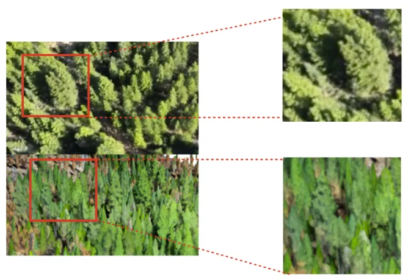
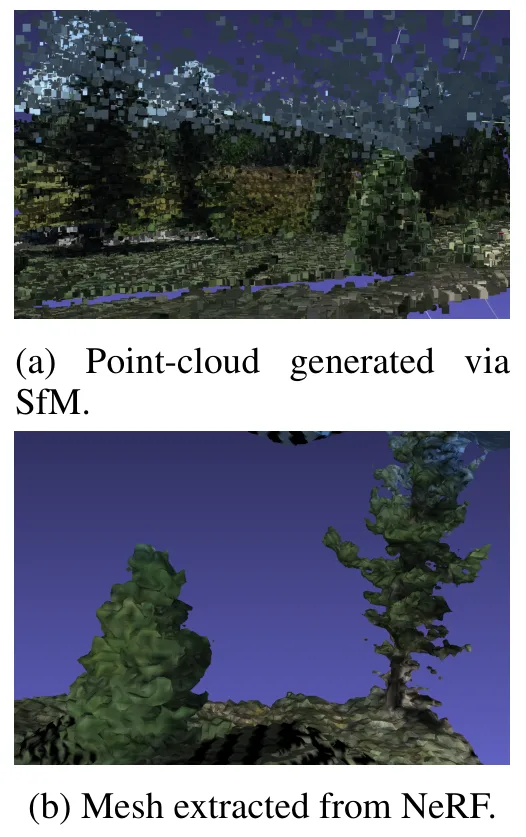
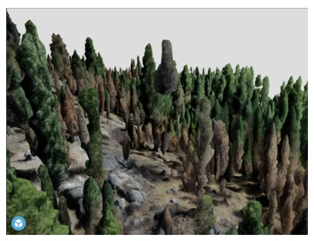

面向 Open Forest Observatory 的神经树木重建Neural Tree Reconstruction for the Open Forest Observatory
偏应用与探索，和 UAV SfM/地理空间三维重建相关，但算法贡献不如 SLAM/3DGS 在线重建直接；可作为森林测绘数据和 sparse aerial reconstruction 方向资料。
一句话工作总结
该工作讨论用 NeRF/神经三维重建改进 UAV 森林树图，目标是替代或增强传统 SfM 生成的低成本林业三维地图。
摘要
Open Forest Observatory 致力于让生态学家、土地管理者和公众都能使用低成本森林测绘数据，构建地理空间森林数据库和 UAV 森林测绘开源工具。当前 OFO 森林地图数据库中的三维树图主要由经典 Structure-from-Motion 技术生成，但这种方法容易产生伪影、细节不足，并且对林下区域尤其困难，因为 overhead imagery 对森林地面可见性有限。重建误差可能传播到野火仿真等下游科学任务。本文探索如何把 NeRF 等三维重建进展引入 OFO 数据集，讨论未来如何支持更先进的三维视觉模型，并强调高质量三维重建对林业应用的重要性。
The Open Forest Observatory (OFO) is a collaboration across universities and other partners to make low-cost forest mapping accessible to ecologists, land managers, and the general public. The OFO is building both a database of geospatial forest data as well as open-source methods and tools for forest mapping by uncrewed aerial vehicle. Such data are useful for a variety of climate applications including prioritizing reforestation efforts, informing wildfire hazard reduction, and monitoring carbon sequestration. In the current iteration of the OFO's forest map database, 3D tree maps are created using classical structure-from-motion techniques. This approach is prone to artifacts, lacks detail, and has particular difficulty on the forest floor where the input data (overhead imagery) has limited visibility. These reconstruction errors can potentially propagate to the downstream scientific tasks (e.g. a wildfire simulation.) Advances in 3D reconstruction, including methods like Neural Radiance Fields (NeRF), produce higher quality results that are more robust to sparse views and support data-driven priors. We explore ways to incorporate NeRFs into the OFO dataset, outline future work to support even more state-of-the-art 3D vision models, and describe the importance of high-quality 3D reconstructions for forestry applications.
中文解读摘录
- 链接：abs / PDF；作者：Marissa Ramirez de Chanlatte, Arjun Rewari, Trevor Darrell, Derek J. N. Young；类别：cs.CV；采集 score=9；ICLR 2024 climate workshop。
- 核心思路：Open Forest Observatory 目前用 UAV 图像和传统 SfM 生成森林三维树图，但林下可见性差、伪影多、细节不足；本文讨论把 NeRF/神经三维重建引入低成本森林地图数据库。
- 方法要点：偏综述/探索性质，强调三维树图质量会影响野火仿真、碳汇估计和森林管理等下游科学任务。
- 关注点：适合放入 UAV SfM/NeRF 地理空间重建专题；对 SLAM 的直接算法贡献有限，但可跟踪其数据集、重建质量指标和对 sparse aerial views 的处理方式。
图表/页面预览

{kind=link}

{kind=link}

{kind=link}
